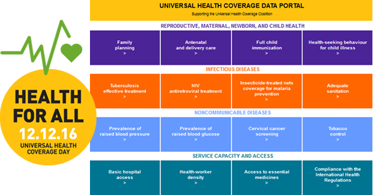

Global Health Observatory (GHO) data :
GHO Data
Child Care < 50%
of children with suspected pneumonia in low income countries are taken to an appropriate health providerCare seeking for pneumonia
Health Worker Density < 44%
of WHO Member States report to have less than 1 physician per 1000 populationDensity of physicians
Adequate sanitation 68%
of the world’s population had access to improved sanitation facilities in 2015Use of improved sanitation facilities
Global Themes

The Global Health Observatory theme pages provide data and analyses on global health priorities. Each theme page provides information on global situation and trends highlights, using core indicators, database views, major publications and links to relevant web pages on the theme.